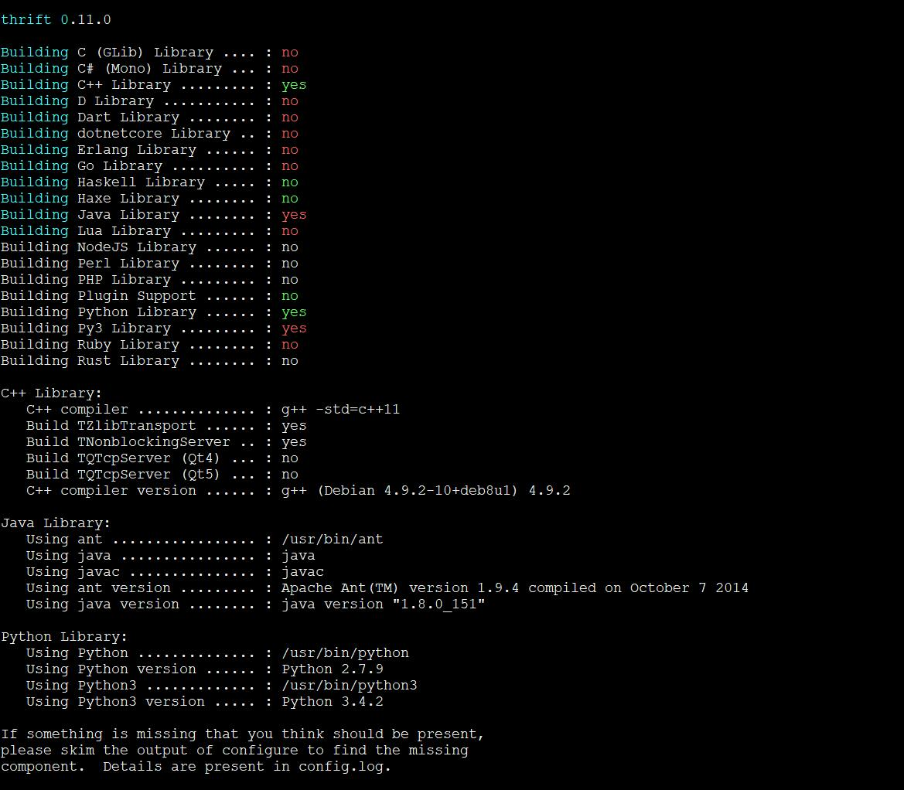

Thrift 安装
Thrift 作为 RPC 的通讯框架，有很多的优势，但是唯一不足的是，Thrift 官网并没有提供
良好的文档，本文作为一个指南性教程，将一步一步教如何快速掌握 Thrift 的使用以及其优良的特性。
Thrift 安装比较复杂，本文仅仅以 Linux 的发行版 Debian 8 为示例，演示安装过程。
使用 Thrift 肯定是以某种语言为依托的，本文使用的语言是 Java (1.7 以及以上版本)、
Python (2.6及以上)，在后续的示例中会以Python 和 Java 为示例，分别作为服务端或客户端，完成跨语言的调用。所以在安装 Thrift 之前，必须先安装 Python 和 JDK。Python 操作系统默认安装，此处不再多说，至于 Java 的依赖包 JDK 网上有很多安装教程，请自行百度或者Google。此处重点关注 Thrift 的安装。
- 首先，安装一些必要的工具和包：
$ tar -zxvf apache-ant-1.9.0-bin.tar.gz
$ vim /etc/profile
输入如下配置
export ANT_HOME=/path/to/ant_1.9.0
export JAVA_HOME=/path/to/jdk1.8.0_151
export CLASSPATH=.:$JAVA_HOME/lib/tools.jar:$JAVA_HOME/lib/dt.jar
export PATH=$JAVA_HOME/bin:$ANT_HOME/bin:$PATH
$ . /etc/profile
$ sudo apt-get install automake bison flex g++ git libboost-all-dev libevent-dev libssl-dev libtool make pkg-config gcc gcc++ mpi-default-dev libicu-dev python-dev python3-dev libbz2-dev zlib1g-dev
$ wget http://sourceforge.net/projects/boost/files/boost/1.60.0/boost_1_60_0.tar.gz
$ tar xvf boost_1_60_0.tar.gz
$ cd boost_1_60_0
$ ./bootstrap.sh
$ ./b2
$ sudo ./b2 install
- Thrift 安装
$ wget http://mirrors.tuna.tsinghua.edu.cn/apache/thrift/0.11.0/thrift-0.11.0.tar.gz
$ tar -zxvf thrift-0.11.0.tar.gz
$ cd thrift-0.11.0
$ ./configure --with-cpp=no // 不添加此项 编译时(make) 不通过
$ make
$ sudo make install
$ which thrift
输出如下：
/usr/local/bin/thrift
则表示安装完成
附，安装截图：

- 也可能是版本等其他原因，
Thrift的安装比较麻烦，经常出现安装不成功的情况。一定要自己多动手，多进行 Google 查询解决安装中的问题